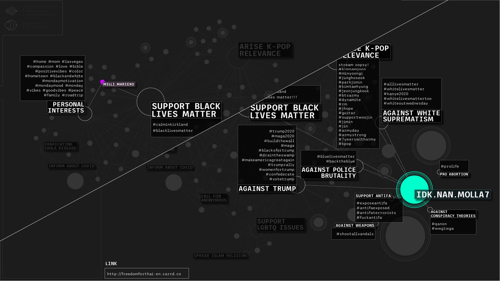

On 28th June 2020, Kirkland police requested to use the hashtag #calminkirkland to denounce the protesters in the public riots for the murder of George Floyd. After having been immediately hijacked by some K-pop fans, a lot of users started mentioning this hashtag for different purposes. The research aims to show all these authors, the different types of their profile, and the topics they supported, in order to give an overview of those who have hijacked knowingly or not.
The hashtag #calminkirkland is used in different ways. The most active users accompany their hijacked hashtag with many other hashtags correlated with various social and political issues. On the contrary, there are users who mention other generic hashtags in minimal quantities, revealing their aim of increasing the popularity of their posts by using the trending hashtag. 
The users who mentioned #calminkirkland several times are for the most part also sharing links to petitions and fundraisers. Their posts and profiles highlight that they are in fact consciously committed to this form of digital activism.
The users that mentioned #calminkirkland more than once, showing a greater or more effective commitment to the hijacking, are mostly k-pop stans: these users, in addition to spamming political and social hashtags, usually publish visual and textual contents and use hashtags related to k-pop world and their idols.
Users who hijacked #calminkirkland, with or without awareness, have supported and disseminated many other hashtags and contents, clusterizable in specific categories. These contents have various natures, but most of them support social and political issues and they are common to several groups of users.
The users mentioning #calminkirkland in more than 20 posts, proving to be actual digital activists, are those who use their Instagram profile just to spam hashtags and contents of various kinds. Instead, users who post private contents or promote a business activity published fewer posts mentioning #calminkirkland, proving to be unaware of the power of this form of digital activism.
Most of the users, including those who have multiple posts still accessible from their profiles, sided against Trump using hashtags that criticize the subject or using targeted hashtags to hijack them in their turn.
Some of the users who hijacked #calminkirkland proved to be Muslims posting visual contents and quotes from the Koran, also using dedicated hashtags. Almost all the users who spammed this kind of contents have also spread hashtags related to the LGBT category. Hashtags such as #el_islam_es_la_verdad were often juxtaposed to #LGBTQ.